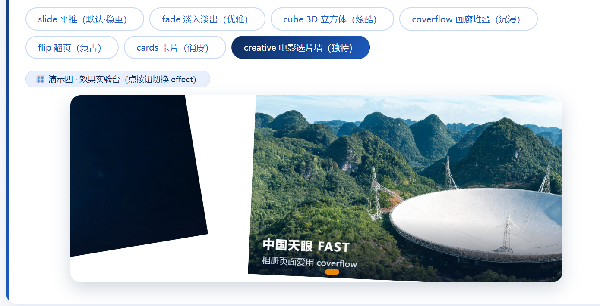

Swiper 轮播组件 · 大国重器光影展（学生版）
HTML 骨架和 CSS 样式已经全部搭好，图片也备齐了——但这个页面的轮播一个都不会动！ 因为所有 <script> 里的 JS 初始化代码都被抽走了。你的任务：把 4 个轮播全部"救活"。
① Swiper 组件库已通过 CDN 引入（页面第 8、9 行），不需要再写引入代码；
② 每个"演示台"下面的绿色卡片就是该任务的要求，JS 代码统一写在页面最底部的
<script> 区域内；③ 每完成一个任务就刷新页面验证：能拖、能点、会自己翻，才算通过；
④ 控制台（F12）报错是你要最好的朋友——先读报错，再改代码。
救活最小轮播三行 JS · 让照片可以拖动
下面是"最小轮播"骨架：三层结构齐全，但因为没有初始化，照片僵在第一张。请写出初始化代码，让它至少可以按住拖动。
✍️ 任务 1 要求
在页面底部 <script> 中初始化 #wySw1，让它成为可拖动的轮播（最基础写法，一个空配置对象即可）。

天宫空间站
2022 年全面建成 · 中国人的太空家园

复兴号动车组
350 km/h · 世界商业运营最高时速

C919 大飞机
2023 年商业首航 · 国产干线客机翱翔蓝天

奋斗者号
10909 米 · 触碰地球第四极马里亚纳海沟
装上遥控器pagination 圆点 + navigation 箭头
HTML 里已经埋好了三个"遥控器"元素：#wyPag2（圆点）、#wyPrev2 / #wyNext2（左右箭头）。请通过配置让它们"通电"。
✍️ 任务 2 要求
初始化 #wySw2，实现 4 个效果：① 无缝循环（loop）② 切换动画时长 600 毫秒（speed）③ 圆点分页器且可点击跳转（pagination，别漏 el）④ 两侧箭头可切换（navigation）。
天宫空间站
三舱结构 · 神舟乘组常年值守
复兴号动车组
京张高铁智能驾驶 · 百年京张到智能京张
C919 大飞机
让中国人的大飞机梦照进现实
奋斗者号
坐底万米 · 深海探测进入"中国时代"
让它自己翻页autoplay 自动播放 + loop 无缝续播
网页 Banner 最常见的形态：自己会翻页。autoplay.delay 控制每张停留的毫秒数，disableOnInteraction: false 表示用户手动滑动之后自动播放不停止。
✍️ 任务 3 要求
初始化 #wySw3，实现：① 循环播放 ② 每 2.6 秒自动翻页 ③ 用户拖动之后自动播放继续 ④ 保留底部圆点分页器（#wyPag3）。
天宫空间站
巡天遥看一千河
复兴号动车组
中国速度 · 风驰电掣
C919 大飞机
蓝天之上 · 大国担当
奋斗者号
万米深潜 · 无畏探索
六种效果随心换effect 参数 + 进阶：按钮实时切换
改一个 effect 参数，轮播立刻换一种"性格"：slide / fade / cube / coverflow / flip / cards。上面的 6 个按钮已经绑好了点击事件（读取 btn.dataset.fx），JS 还需要你补两段。
✍️ 任务 4 要求
基础分：初始化 #wySw4，实现循环 + 自动播放（3.2 秒）+ 圆点分页器（#wyPag4），初始效果为 'slide'，动画时长 800 毫秒。
进阶分：补全按钮点击事件中的 TODO——实现点击按钮切换效果。提示：Swiper 动态换 effect 不能只改参数，需要先销毁旧实例再重建（destroy + new）。
⭐ 验证标准：基础分——轮播自动翻页；进阶分——点 cube 按钮变 3D 立方体、点 fade 变淡入淡出天宫空间站
试试上面的效果按钮
复兴号动车组
同一组照片，六种讲述方式
C919 大飞机
企业官网爱用 fade
奋斗者号
游戏网站爱用 cube
提示词工程师：让 AI 听懂需求★★ · 本任务不写代码，只写提示词
本任务不写代码，写提示词。把下面需求"翻译"给 AI，让它生成 new Swiper("#wySw5", {...}) 的配置：① 无缝循环 ② 3.2 秒自动翻页且手动操作后不停止 ③ 圆点分页器可点击 ④ 初始效果为 cube。
✍️ 任务 5 要求
硬性要求：至少迭代 2 轮提示词（第 1 轮 AI 答案大概率有遗漏或错误），保留每轮提示词与 AI 回答，并亲自到页面验证每项需求。用截图 + 一句话结论说明验证结果。
🎤 答辩抽问：你的第一版提示词漏掉了哪个需求？你是在第二轮"说清楚"的？AI 第一次给的代码错在哪？ 📌 考核点：需求拆解 → 提示词精确性 → AI 输出验证 → 让 AI 讲堂分// 通用 Swiper 轮播配置（针对 #wySw5）
new Swiper("#wySw5", {
speed: 500,
pagination: {
el: ".swiper-pagination",
},
autoplay: true,
});
首轮提示词漏了四个关键要求：无缝循环、3.2 秒间隔、手动操作后继续播放、cube 立方体效果——提示词没写清，AI 只能泛泛而答，四条全没满足。
var cmq_sw5 = new Swiper('#wySw5', {
loop: true, // ① 无缝循环
autoplay: {
delay: 3200, // ② 每 3.2 秒翻一张
disableOnInteraction: false, // ② 手动拖动后不停止
},
pagination: {
el: '#wySw5 .swiper-pagination', // ③ 用自己的圆点容器
clickable: true, // ③ 圆点可点击跳转
},
effect: 'cube', // ④ 3D 立方体
});
验证结论：四条要求全部实测通过 ✓——自动翻页间隔 3.2 秒；点第 3 个圆点精确跳到第 3 张且高亮同步；容器带 swiper-cube 类；控制台零报错。
天宫空间站
巡天遥看一千河
复兴号动车组
中国速度 · 风驰电掣
C919 大飞机
蓝天之上 · 大国担当
奋斗者号
万米深潜 · 无畏探索
creative 仿写：课堂没讲，AI 教你★★★ · Swiper 第 7 种效果 · 自学能力挑战
课堂上只讲了 6 种 effect，Swiper 其实还有第 7 种——creative（自定义变换），本课未讲解。请打开官方示例 · Effect Creative ↗，配合 AI 读懂 creativeEffect 的 transform 写法，为演示四新增第 7 个按钮「creative 电影选片墙」。
✍️ 任务 6 要求
效果要求：上一张缩小左移并带角度，下一张放大右移（参数自定，但要"像电影选片墙"）；实现前后向 AI 追问，并用自己的话写下：transform 里的百分号是相对谁的？改一个数能让卡片转 20 度吗？
🎤 答辩抽问：transform 里的百分号是相对谁的？改一个数能让卡片转 20 度试试？ 📌 考核点：用 AI 自学未讲过的 API + 官方示例阅读能力 · 计入课堂分translate 数组是 [x, y, z]：x 是水平位移、y 是垂直位移、z 是远近（模拟景深）。百分号是相对 slide 自身宽高的——"-120%" 就是把卡片推到自己宽度 1.2 倍的左边；不带百分号的数字是像素；z 值越小离你越远（配合阴影显出层次）。rotate 是 [x, y, z] 三轴旋转角度，单位是度。
能——把 rotate 第三项改成 20 即可。选片墙最终参数如下（已加进演示四的第 7 个按钮）：
creativeEffect: {
limitProgress: 2, // 让前后各露出 2 张，墙更有层次
shadowPerProgress: true, // 阴影随位移加深，突出景深
prev: { translate: ['-115%', 0, -260], rotate: [0, 0, -14] }, // 上一张：左移、推远、左倾
next: { translate: ['115%', 0, 120], rotate: [0, 0, 8] }, // 下一张：右移、拉近放大、微倾
}
验证结论：点「creative 电影选片墙（独特）」按钮，上一张缩小左移带角度、下一张放大右移，效果符合预期 ✓。

综合创作 + 技术答辩：超级加分项★★★ · 加一张新藏品 + 一个超纲能力
两件事：① 为光影展添加第六件最爱·"藏器"（首选国产大飞机，2024 年 1 月首航，图片用 AI 生成（模板 16:9），slide 结构完整）；② 挑一个课堂上没讲过的 Swiper 能力加上去：keyboard 键盘控制 / mousewheel 滚轮 / zoom 双击缩放 / parallax 视差，任选其一。AI 可用。
✍️ 任务 7 要求
提交物：能运行的页面 + 与 AI 的关键对话记录（提示词 + 重要往返）。答辩四连问：这段代码什么意思？AI 第一次给的哪里不对，你改了什么？新参数的作用？现场把 delay 改一个值证明你理解了变化。
⭐ 提交要求：任务一、二、三于下次课（11.11 之前）提交到 GitHub 或 Netlify 发布，并且给提示词留访问入口，下次课抽查每个人回答问题 📌 考核点：AI 协作完成超纲功能 + 技术表达 · 答辩通过才算真会var cmq_sw4Box = document.getElementById('wySw4');
cmq_sw4Box.addEventListener('dblclick', function (cmq_e) {
var cmq_img = cmq_e.target.closest('img');
if (cmq_img) cmq_img.classList.toggle('cmq_zoomed');
});
// CSS：img.cmq_zoomed { transform: scale(1.9); transition: transform .4s }
AI 第一次把监听器绑在每一张 img 上——但切效果时实例会 destroy(true, true) 重建，行内样式被清、后续交互容易失效。改成事件委托：监听器只绑在容器 #wySw4 上，靠 e.target.closest('img') 找到照片，重建实例后依然有效。
dblclick 双击事件；closest('img') 从点击位置向外找最近的照片；classList.toggle('cmq_zoomed') 切换放大状态类；CSS 的 scale(1.9) 负责视觉放大，transition .4s 让缩放有平滑动画。答辩要点：现场把 1.9 改成别的值，放大倍数立刻变化——证明我理解了这条链路。